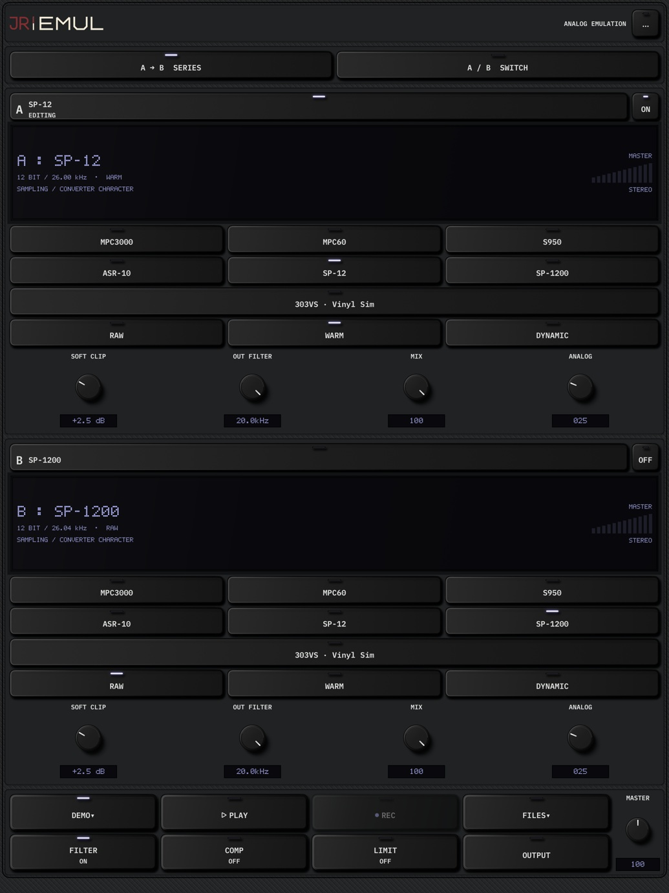
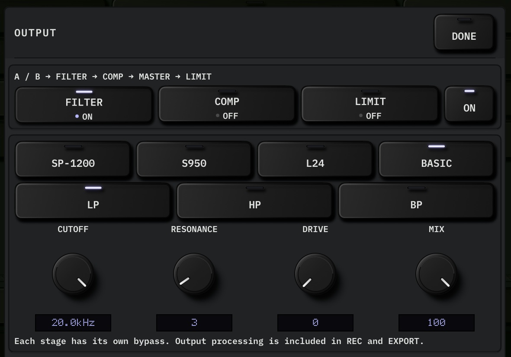
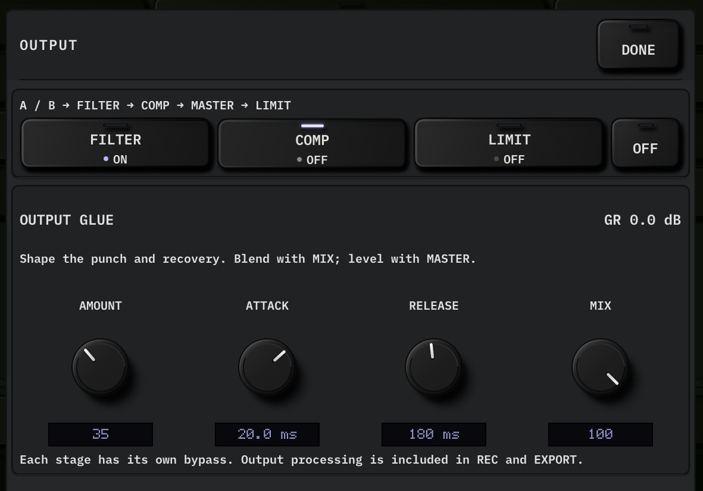

SP1200
A focused, grainy edge.
A 12-bit sampling family with distinct RAW, WARM and restrained DYNAMIC output colors.
SAMPLER COLOR / VINYL SIMULATION
Give your sound the color of a sampler or the punch of vinyl simulation. Combine two character slots, shape the output, and keep the take.
IN DEVELOPMENT · iPHONE / iPAD / AUv3

START HERE / CHOOSE YOUR CHARACTER
Each sampler model combines its own conversion family and playback behavior. 303VS adds JR’s vinyl-inspired compression, texture and pitch movement.
SP1200
A 12-bit sampling family with distinct RAW, WARM and restrained DYNAMIC output colors.
SP-12
A 12-bit, 26 kHz sampler-inspired model. Start with the fixed five-pole WARM response or explore RAW and DYNAMIC.
S950
A variable-bandwidth sampling family, with recording emphasis and a refined six-pole playback model treated separately.
ASR-10
A 16-bit conversion family with normal / low-clock character and a modeled voice-filter path.
MPC60
The nonlinear 12-bit storage family, with its own bandwidth and playback contour.
MPC3000
A 16-bit, 44.1 kHz conversion family with modeled reconstruction and output contour.
303VS
JR’s original vinyl-inspired mode: compression, surface texture and pitch motion. 303VS means Vinyl Simulation.
THEN / BUILD YOUR PATH
Serial routing passes the signal through Slot A, then Slot B.
This diagram explains routing; its buttons do not process the listening examples.
Each slot keeps its own model, settings, power and MIX. In SERIES, both enabled stages contribute. In SWITCH, selecting A or B chooses the audible path.
ACTUAL APP SCREENS / JR BK
JR BK is the default look. Use the app’s skin picker to switch to JR WH or VINTAGE.


The shared output runs Filter → Comp → Master → Limit. Toggle a stage from the main screen, or hold its button to edit it. The compressor adds control over attack, release and parallel mix, with a gain-reduction readout.
OUTPUT / FOUR FILTER FAMILIES
The optional OUTPUT filter follows your two character slots. Shape the combined result with CUTOFF, add DRIVE for color, then set MIX for the balance you want. Choosing a filter does not automatically turn it on.
A low-pass color informed by the SSM2044 filter family. CUTOFF sets the brightness; MOTION adds a restrained, signal-responsive lift. MOTION is not a resonance control.
Try it on drums when you want to soften the top without a pronounced sweeping-filter effect.
Read the SP1200 controlsAn MF6-family six-pole low-pass response with fixed section damping. The interface shows FIXED / 6 POLE in place of a resonance knob.
Use CUTOFF to set the upper edge. The standalone output filter does not add the sampler’s recording emphasis or playback compensation.
Read the S950 controlsA resonant 24 dB/octave ladder low-pass with soft drive. RESONANCE emphasizes the region around CUTOFF. It is a filter family, not a named hardware-unit clone.
Choose it for stronger tone shaping. Find cutoff first, then bring in resonance and drive as needed.
Read the L24 controlsLow-pass softens highs; high-pass clears lows; band-pass focuses a frequency region. RESONANCE adjusts the emphasis around the selected cutoff.
Use BASIC for direct shaping before reaching for a more strongly colored filter.
Read the BASIC controls
Inside the sampler: input, converter and playback behavior define its character. SP1200’s RAW / WARM / DYNAMIC colors and S950’s REC BW belong to that model.
After the slots: OUTPUT adds a separate filter. Choosing OUTPUT S950 does not add S950 sampling or recording emphasis. Choosing OUTPUT SP1200 does not turn another model into a 12-bit converter.
The actual final order is slots → FILTER → COMP → MASTER LEVEL → LIMIT. Each OUTPUT stage has its own ON / OFF control and starts bypassed in a fresh setup.
Open the complete filter guideLISTEN / SAME DRUM LOOP
Switch between the dry drums, six sampler models and 303VS vinyl simulation. All eight clips share the same source and input gain, with each effect’s natural output level preserved.
Ready · Dry · same input gain
Current JR EMUL engine renders · shared gain · stereo
Original JR synthesized drums, rendered through Slot A. The sampler clips use full slot mix. The SP-12 clip uses RAW output. For 303VS, compression, noise and wow are set to 53, 14 and 16. The shared output rack is bypassed and all clips receive the same playback gain.
FINISH / CAPTURE THE RESULT
Select INPUT to process live audio without pressing PLAY. FILE and DEMO use their own playback control.
REC captures your live performance. EXPORT renders a source file with a snapshot of the current settings. TAKES keeps the results ready to preview, name and share.
Insert JR EMUL as an AUv3 audio effect. Your host handles transport and input routing, with plug-in parameters available for automation and project recall.
The searchable manual covers source selection, every model and OUTPUT filter, recording, export, take management and host use.
Read the complete manualPLATFORMS
Standalone app and AUv3 audio effect. Use the standalone app for demo, file and live input, plus REC, EXPORT and TAKES. AUv3 uses your host’s transport and routing.
Planned for Ko-fi. Mac builds target AU and VST3, and Windows targets x64 VST3. Use your host for transport and recording.
A standalone app in testing, planned for Google Play.
GO DEEPER
Explore measured spectra, soft clipping, circuit families and the differences between recording and playback response in one dedicated lab.
Open Sound LabFollow the source-to-take workflow or search for the exact control you need.
Open the manualJR EMUL is in development. Get project news, or explore JR FX for pads, buses and a wider performance-effects workflow.
THE JR FAMILY